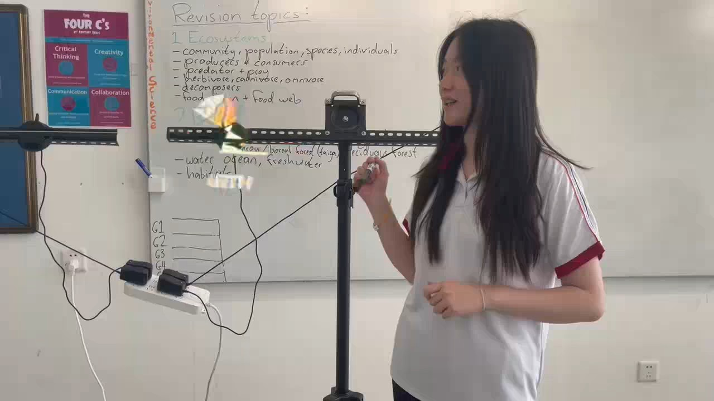

Light & Projection
Phantom Vision
Visitors see a glowing image appear above a transparent surface, then compare how the illusion changes when the angle, room light, or viewing position shifts.
CategoryIllusion
PresenterOptics Team
Science principleReflection, projection, viewing angle
Safety noteLow-risk display. Control room lighting for the best effect.
Project video